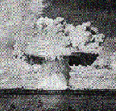

- society -
Please send comments and contributions via e-mail to c. . The scope of the society includes such issues as environmental, health and safety implications of technology; engineering ethics and professional responsibility; history of electrotechnology; technical expertise and public policy; peace technology; and social issues related to energy, information technology and telecommunications. SSIT publishes a quarterly journal, IEEE Technology and Society Magazine, and sponsors periodic conferences entitled The International Symposium on Technology and Society (ISTAS). Membership in SSIT is open to all IEEE members and student members.
Critical Research and its associated companies can provide you with a full research service, from preparing a brief to presenting results. We conduct ad hoc qualitative and quantitative projects, so you can be sure that whatever your research needs, Critical Research can provide your business with a fast and cost-effective service. Critical Research is a member of BMRA, and directors and executives are members of the Market Research Society and abide by their code of conduct. ..
|  |
Recent performances have criticized the politics of the body manifested in biotechnology, in vitro fertilization and human genetics research. For example, the large-scale performance Flesh Machine (1997-98), which highlighted eugenics in the discourse and practice of current human reproduction technologies, featured the actual genetic screening of audience members and the diary of a couple going through in vitro fertilization. The performance Society for Reproductive Anachronisms (1999) engaged the audience in dialogue about the danger of medical intervention in reproduction. In Cult of the New Eve (2000), CAE use the apocalyptic language of an imaginary cult to explore rhetoric surrounding recent genomic developments. In addition, CAE has published three books on culture and society in the age of electronic media including Electronic Civil Disobedience and Other Unpopular Ideas.
If you are interested in having such work done for you, then please do visit Tanith's page on our website where all is explained. . PLEASE NOTE WE ARE NOT A WICCAN GROUP and therefore do not follow the Wiccan pathway - we have members from all spiritual paths in our Society. We do not tell you how to do your own spells and magics, ever. The magic we use is entirely different to the run of the mill candle spells that you find in popular modern books, and takes many years in which to train on a one to one basis.
another society site: http://www.lib.uwaterloo.ca/society/webpages.html
.